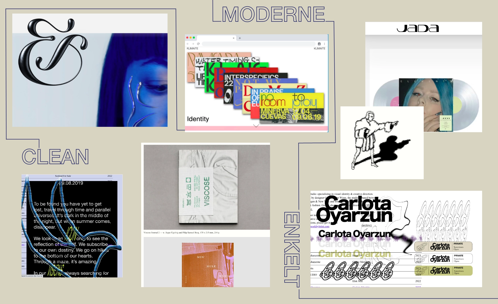

PORTFOLIO SITE
DESIGN PROCESS
Jeg startede min design process ud med at lave et moodboard med et moderne udtryk, et clean look og nedtonede behagelige farver. Derefter skitserede jeg forsiden ved brug af cracy8’s og udfra det kom jeg frem til en idé til min forside. Jeg gik videre til wireframes for at få en idé til layout. Jeg har arbejdet med et symmetrisk opsætning for at skabe overblik og ro for øjet, derudover har jeg tænkt gestaltlovene ind, hvor jeg især har tænkt over nærhed, lighed og lukkethed, ved brug af borders.
Jeg har prioriteret whitepace for at få det vigtige til at stå frem f.eks. på forsiden. Udefra min logo idé fra skitserne tegnede jeg mit logo i Illustrator med en 3D effekt som jeg blev inspireret af fra mit moodboard. Derudover ville jeg gerne lave en ekstern illustration som gav siden et personligt udtryk. Jeg startede ud med at illustrere en rose med samme 3D effekt som logoet.
Jeg gik derefter videre til at lave mockups til ‘forside’, ‘om mig’, og en fælles til tema siderne.
Udefra mit moodboard lavede jeg et styletile hvor jeg havde besluttet mig for farver, fonte og logo til siden. Jeg testede min farve kontrast efter i adobe color, og sikrede mig at min kontrast mellem baggrund og tekst var høj, så det blev let læseligt.
Jeg lavede et par tænk højt tests undervejs, hvilket bl.a. ledte mig væk fra rose illustrationen og til en anden illustration med en ny placering som ikke bryder elementerne op. Jeg ville gerne have brugt flere teste som survey eller berttest hvis jeg havde haft mere tid.

PROCESS
CRAZY8
WIREFRAME TIL TEMA SIDER MOBIL.
WIREFRAME TIL TEMA SIDER.
FARVE TEST
MOODBOARD
MUCKOP TIL TEMA.
MUCKOP TIL TEMA MOBIL.
STYLETILE
KODE
I min kodning har jeg arbejdet med mobile-first tilgangen, og derefter tilpasset til desktop format, dette jeg jeg gjort med media-queries som skiller ved en skærmvidde på 800px. Min hjemmeside skalerer ikke helt optimalt i iPad, så hvis jeg havde haft mere tid havde jeg lavet en ekstra media-query med css dertil.
Jeg har brugt rem fremfor px ved font-size og border width, og og forsøgt mig med at bruge mere % til billedstørrelser for at opnå bedre skalering. Førhen har jeg kun brugt px. TIl layout har jeg gjort brug af 2 column grid i main for at opnå symmetrisk layout, og til header og footer har jeg brugt flex. Jeg har lavet en burger menu til både desktop og mobil ved hjælp af javascript.
For at få en smule bevægelse på siden da jeg har meget lidt javascript, har jeg anvendt en scale animation som hover effekt på mine billeder på siden. Jeg har 2 css filer som deles op i generel css og css til temasiderne. Jeg har brugt comment tags til at dele koden op og gøre den mere overskuelig for mig selv.
PROCESS
CSS
JAVASCRIPT